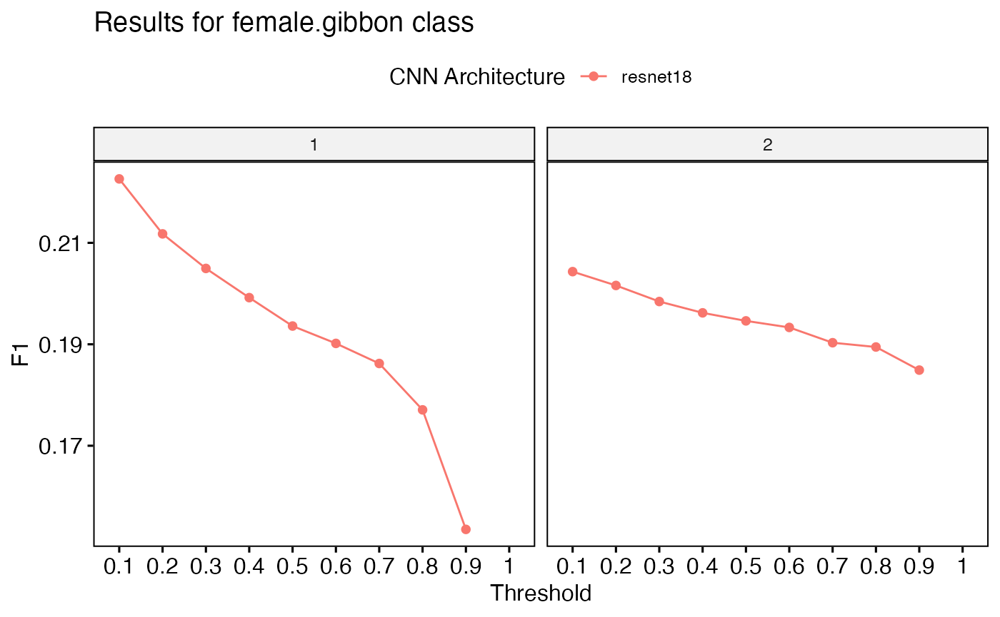

Create spectrogram images for training
This example assumes you have downloaded the multiclass data as explained here: https://denajgibbon.github.io/gibbonNetR/articles/a01b-GettingStarted.html.
library(gibbonNetR)
# Check folder composition
TrainingDatapath <- "data/trainingclips"
# Create spectrogram images
spectrogram_images(
trainingBasePath = TrainingDatapath,
outputBasePath = "data/trainingimages/",
minfreq.khz = 0.4,
maxfreq.khz = 1.6,
random = FALSE,
splits = c(0.7, 0.3, 0), # Assign proportion to training, validation, or test folders
new.sampleratehz = "NA"
)Check folder structure. There are two folders, train and valid.
list.files("data/trainingimages/")## [1] "train" "valid"We can check inside the train folder.
list.files("data/trainingimages/train")## [1] "female.gibbon" "hornbill.helmeted" "hornbill.rhino"
## [4] "long.argus" "noise"Then look at the first two image files.
list.files("data/trainingimages/", recursive = TRUE)[1:2]## [1] "train/female.gibbon/female.gibbon_S10_20180620_080003_1236.64391631774_1254.21379409804_.jpg"
## [2] "train/female.gibbon/female.gibbon_S10_20180620_080003_1285.54514263521_1301.64286307873_.jpg"We also have our test dataset.
list.files("data/testimages/test/", recursive = TRUE)[1:2]## [1] "female.gibbon/female.gibbon_SW1_20180304_060002_6813.17110142964_6822.1741043056_.jpg"
## [2] "female.gibbon/female.gibbon_SW1_20180304_060002_6961.93442619326_6967.43748506342_.jpg"Now we can train a model.
For this example we will specify the ‘resnet18’ architecture, as it is the least complex of the ResNet architectures in this package and can run faster. We will only train for 1 and 2 epochs.
# Location of spectrogram images for training
input.data.path <- 'data/trainingimages/'
# Location of spectrogram images for testing
test.data.path <- 'data/testimages/test/'
# User specified training data label for metadata
trainingfolder.short <- 'danummulticlassexample'
# Specify the architecture type
architecture <- c('resnet18') # Choose from 'alexnet', 'vgg16', 'vgg19', 'resnet18', 'resnet50', or 'resnet152'.
# We can specify the number of epochs to train here
epoch.iterations <- c(1,2)
# Function to train a multi-class CNN
gibbonNetR::train_CNN_multi(input.data.path=input.data.path,
architecture =architecture,
learning_rate = 0.001,
class_weights = rep((1 / 5), 5),
test.data=test.data.path,
unfreeze.param = TRUE,
epoch.iterations=epoch.iterations,
save.model= TRUE,
early.stop = "yes",
output.base.path = "data/model_output/",
trainingfolder=trainingfolder.short,
noise.category = "noise")Now we can inspect the output in the ‘data/model_output’ folder.
list.files("data/model_output/",recursive = TRUE)## [1] "_danummulticlassexample_multi_unfrozen_TRUE_/_danummulticlassexample_1_resnet18_logs_model.csv"
## [2] "_danummulticlassexample_multi_unfrozen_TRUE_/_danummulticlassexample_1_resnet18_model.pt"
## [3] "_danummulticlassexample_multi_unfrozen_TRUE_/_danummulticlassexample_2_resnet18_logs_model.csv"
## [4] "_danummulticlassexample_multi_unfrozen_TRUE_/_danummulticlassexample_2_resnet18_model.pt"
## [5] "_danummulticlassexample_multi_unfrozen_TRUE_/_danummulticlassexample_2_resnet18_output_TrainedModel_testdata.csv"
## [6] "_danummulticlassexample_multi_unfrozen_TRUE_/performance_tables_multi/danummulticlassexample_1_resnet18_TransferLearningCNNDFMultiThreshold.csv"
## [7] "_danummulticlassexample_multi_unfrozen_TRUE_/performance_tables_multi/danummulticlassexample_2_resnet18_TransferLearningCNNDFMultiThreshold.csv"
## [8] "_danummulticlassexample_multi_unfrozen_TRUE_/resnet18_model_metadata.csv"Now we can evaluate performance.
Once training is complete, we can assess the model’s performance using the function get_best_performance(). This function retrieves the model’s evaluation metrics and generates an F1-score plot. Since this is a toy example, we would not expect great performance.
performancetables.dir <- 'data/model_output/_danummulticlassexample_multi_unfrozen_TRUE_/performance_tables_multi'
PerformanceOutput <- get_best_performance(performancetables.dir = performancetables.dir,
model.type = "multi",
class = "female.gibbon",
Thresh.val = 0.1)## Evaluating performance for female.gibbon Here are the present classes: female.gibbonEvaluating performance for female.gibbon Here are the present classes: hornbill.helmetedEvaluating performance for female.gibbon Here are the present classes: hornbill.rhinoEvaluating performance for female.gibbon Here are the present classes: long.argus
PerformanceOutput$f1_plot
PerformanceOutput$best_f1$F1## [1] 0.2226057
PerformanceOutput$best_auc$AUC[1]## [1] 0.4679669We can deploy the best performing model over a longer soundfile
# Load example sound file
data("TempBinWav")
# Save in temp directory
dir.create(paste(tempdir(), "/MultiDir/Wav/", sep = ""), recursive = T, showWarnings = FALSE)
# Write to temp directory
writeWave(TempBinWav, filename = paste(tempdir(), "/MultiDir/Wav/", "TempBinWav.wav", sep = ""))
# Specify model path
ModelPath <- 'data/model_output/_danummulticlassexample_multi_unfrozen_TRUE_/_danummulticlassexample_1_resnet18_model.pt'
# Deploy trained model over sound files
deploy_CNN_multi(
clip_duration = 12,
architecture = "alexnet",
output_folder = 'data/Results/Images/',
output_folder_selections ='data/Results/Selections/',
output_folder_wav = 'data/Results/Wavs/',
detect_pattern = NA,
top_model_path = ModelPath,
path_to_files = paste(tempdir(), "/MultiDir/Wav/", sep = ""),
downsample_rate = "NA",
save_wav = TRUE,
class_names = c("female.gibbon", "hornbill.helmeted", "hornbill.rhino", "long.argus", "noise"),
noise_category = "noise",
single_class = TRUE,
single_class_category = "female.gibbon",
threshold = .25,
max_freq_khz = 2
)
Extract embeddings
This function extracts embeddings from images and applies an unsupervised clustering algorithm (hdbscan). Presently it serves as a data visualization technique. Note that it might take a long time to run on your computer.
# Find model path
ModelPath <- 'data/model_output/_danummulticlassexample_multi_unfrozen_TRUE_/_danummulticlassexample_1_resnet18_model.pt'
# Specify model path
ImageFilePath <- 'data/testimages/test/'
# Function to extract and plot embeddings
result <- extract_embeddings(
test_input = ImageFilePath,
model_path = ModelPath,
target_class = "female.gibbon",
unsupervised = "TRUE"
)
result$EmbeddingsCombinedresult$NMI
[1] 0.8275459
> result$ConfusionMatrixUnsupervisedAssigment
Sensitivity Specificity Pos Pred Value
0.9407115 0.9933333 0.9694501
Neg Pred Value Precision Recall
0.9867550 0.9694501 0.9407115
F1 Prevalence Detection Rate
0.9548646 0.1835994 0.1727141
Detection Prevalence Balanced Accuracy
0.1781567 0.9670224